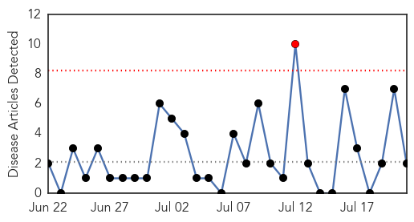
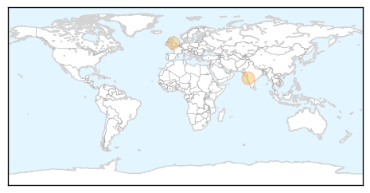
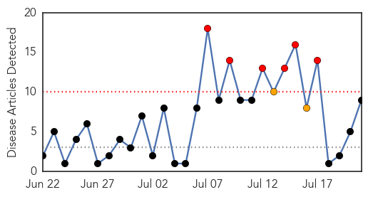

Swine Flu
30-Day Web Trend
1 alerts, 0 warnings

30-Day Twitter Trend
0 alerts, 0 warnings

Article Locations
Article Confidences

Top Articles:
Top Tweets:
-
No tweets found for Jul 21, 2015
West Nile Virus
30-Day Web Trend
6 alerts, 2 warnings

30-Day Twitter Trend
1 alerts, 0 warnings
Article Locations

Article Confidences

Top Articles:
- 0.984
- Louisiana sees first West Nile cases of 2015
- 0.944
- West Nile Virus detected in Utah - Story
- 0.921
- California health officials confirm 2015’s first death from West Nile virus
- 0.888
- First West Nile Virus Death Of 2015 Confirmed In California
- 0.880
- Washington confirms year’s first case of equine West Nile virus
- 0.866
- Sacramento CA: First CA 2015 West Nile Virus Death...
- 0.835
- Mississippi's first case of West Nile virus in 2015 reported in Hinds County
- 0.777
- First West Nile Death in California
- 0.641
- First West Nile virus horse case of the year confirmed in Kennewick
Top Tweets:
-
No tweets found for Jul 21, 2015